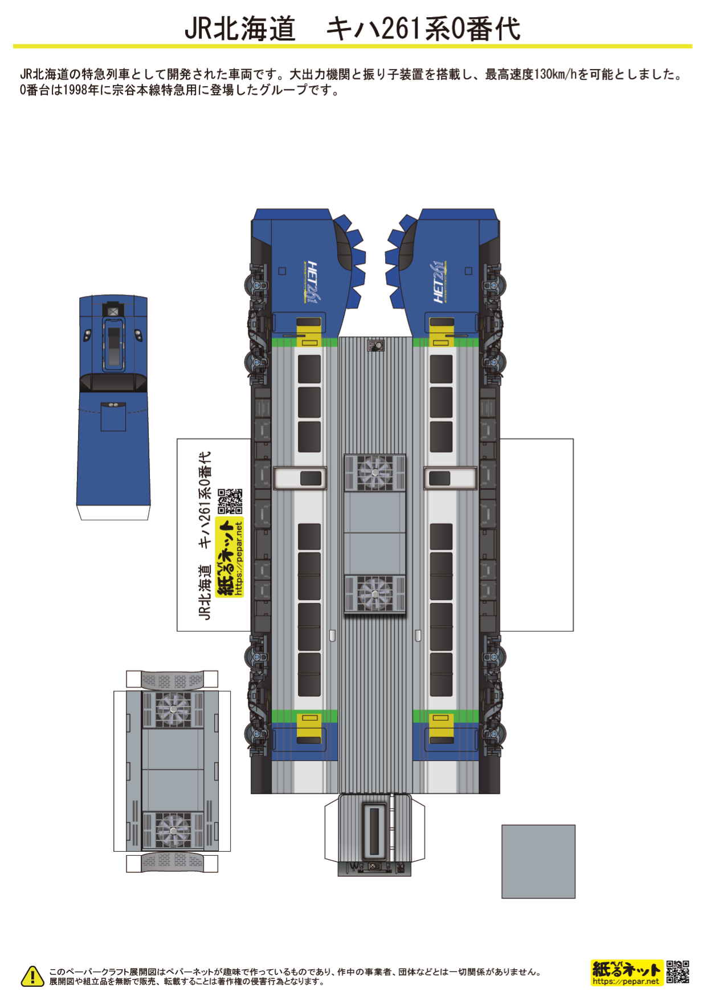
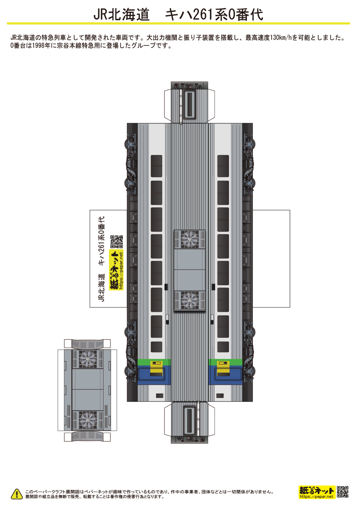

车型：jr-hokkaido-kiha261（0番台，宗谷本線特急「宗谷」「サロベツ」）
图纸来源：ooep/rail-trainpdf — jr/jr_hokkaido_kiha261_0.pdf（2 页，pepar.net 纸模展开图，2,290,719 字节，blob 173a936f…）
用途：MC 2026-11-26 23:49 要求看图纸截图。重做专员正在按实车照片重做车头，此页只放图纸原文。
两端蓝色司机端（带 HET261 字，其中一侧是镜像的）、银色侧面、车顶 2 个空调、绿+黄带近司机端；左上小块是扁平车头端面件（贯通门+小风挡），左下是车顶/贯通端件。

与第 1 页同构，车体朝向相反（蓝色司机端在下端），左下仍是车顶/贯通端件。

注意：图纸标题写的是“0番代”（代），正确表记是“0番台”；模型名字已按“0番台”修正。图纸本身是扁平纸模画法——车头端面是扁平的一块，画不出实车 SE-104 那张圆润的钴蓝色斜面鼻子，这正是重做要改的地方。